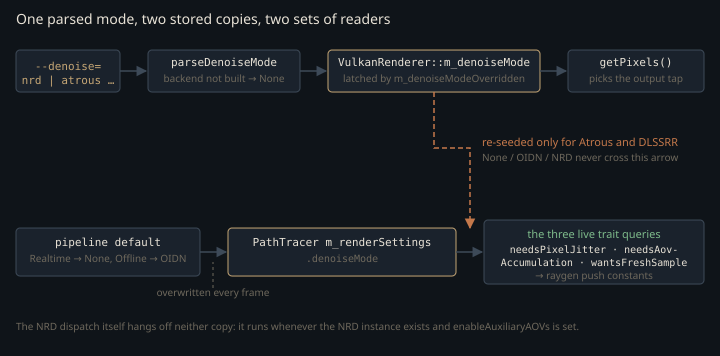

Monograph · Tree · ← Module hub · Denoise modes & traits
denoise
Denoise modes & traits
DenoiseMode enum + DenoiseModeTraits resource needs.
Five values, and a hole where OptiX used to be
`DenoiseMode` is the single token every part of the RT stack uses to say which denoiser is in play, and its enumerators are numbered explicitly and non-contiguously. Value 2 is missing: the OptiX backend was deleted (it segfaulted on shutdown), and the survivors kept their old numbers rather than closing the gap, so NRD is still 3 and the two later additions took 4 and 5.
NRD = 3, // NVIDIA RayTracingDenoiser (Sub-plan 4)ohao/render/rt/denoise/denoise_types.hpp:16The gap costs nothing, because the numeric value never crosses a boundary: nothing packs a `DenoiseMode` into a push constant, writes it to a file, or casts an integer back into one. `denoiseModeIndex` is the only function that reads the underlying value at all, and it has no callers. The numbering is source hygiene, not an ABI.
The parser degrades instead of failing. `optix` still parses, to OIDN, with a warning on stderr, so old scripts keep running:
std::cerr << "[Denoise] --denoise=optix is no longer supported — falling back to OIDN\n";ohao/render/rt/denoise/denoise_types.cpp:24More importantly, `nrd` and `dlssrr` are gated on the build defines that decide whether those backends were compiled in at all; if they weren't, the string resolves to `None` rather than to a mode whose implementation is absent.
<< " requested but OHAO_DLSS=OFF at build time — falling back to None\n";ohao/render/rt/denoise/denoise_types.cpp:41What the fallback buys is mechanical, and only the mechanism is recorded — no comment or commit message weighs an alternative. The frame-final `getPixels()` dispatches on the mode, and the NRD arm reads back the binding-30 tonemapped image: {{cite ohao/gpu/vulkan/renderer.cpp "if (m_denoiseMode == DenoiseMode::NRD) {"}} That image's allocation carries no build guard, but everything that *writes* it lives inside one: {{cite ohao/render/rt/path_tracer_render.cpp "#ifdef OHAO_NRD_ENABLED"}} So an `NRD` mode reaching a non-NRD build would not error: the readback finds a live `VkImage`, returns success, and hands back contents nothing ever wrote. Degrading at parse time keeps that mode out of the switch entirely.
The same table written twice
`rt_meta.hpp` states the per-mode requirements once as a class template whose members are constant expressions, then again as free functions that switch on a runtime value and return the corresponding trait. Both spellings exist because the two callers differ: `if constexpr` needs the compile-time form, a mode that arrived from `argv` needs the runtime one.
`DenoiseModeTraits` is not the dead half. The runtime functions do not restate its table; they switch on the mode and return the trait, so editing the class is what changes behaviour — with one exception, below. What is unreached is the `if constexpr` convenience layer stacked on top of it: `RTFeatureFlags` is named only by `tests/engine/engine_tests.cpp`, `makeFeatureSettings` only there and inside `PathTracer::setFeatureSettings`, and `setFeatureSettings` itself has no callers anywhere in the tree. The chain ends in the test file or in nothing.
The seam is in the runtime mirror. Every query delegates to the trait class except the AOV-accumulation one, which restates the predicate directly:
[[nodiscard]] constexpr bool denoiseNeedsAovAccumulation(DenoiseMode m) noexcept {ohao/render/rt/rt_meta.hpp:188static constexpr bool needs_aov_accumulation =ohao/render/rt/rt_meta.hpp:124Editing `needs_aov_accumulation` in the traits class therefore changes nothing that runs. It is the one place where the header's "same numbers, switch → traits" promise is not kept.
A second seam is structural. The five requirement queries — CPU readback, motion vectors, diff/spec split, pixel jitter, fresh sample — each carry a `default:` arm, so a sixth enumerator would silently answer `false` to all of them. The three exhaustive ones (`denoiseModeName`, `isValidDenoiseMode`, `denoiseIsRealtimeCapable`) list every case and then fall through to a trailing `return`, so the same enumerator would read as invalid and print as `"unknown"`. The project's CMake adds no `-Wall` or `-Werror`, which leaves `-Wswitch` off, so neither shape produces a diagnostic: a newly added mode arrives requiring nothing, and the build stays green.
What the traits actually gate
Three trait queries reach the raygen from inside the tracer's per-frame record, all as push-constant state rather than as pipeline selection. The other three — motion vectors, diff/spec split, CPU readback — have their only production consumer in `applyDenoisePolicy`, two sections down.
Sub-pixel jitter is the first: for `NRD` and `DLSSRR`, the tracer offsets the sample grid by a Halton(2,3) point each frame so the denoiser's temporal accumulation integrates a wider footprint than centre-sampling would.
if (denoiseNeedsPixelJitter(m_renderSettings.denoiseMode)) {ohao/render/rt/path_tracer_render.cpp:86The predicate is an enumerated pair, not a property. `Atrous` owns temporal reprojection too — it is SVGF, with a reprojection pass and a persistent history buffer — and is still excluded; the else arm groups it with `None` and `OIDN` on pixel centres, the stated reason being parity:
// None/OIDN/Atrous keep pixel-center sampling — zero jitter preserves parity.ohao/render/rt/path_tracer_render.cpp:91The sequence index is bumped by one before use, because Halton's zeroth term is exactly 0 — indistinguishable from "no jitter", and it would waste one of the 16 slots in the period:
const uint32_t idx = (m_haltonIndex % 16u) + 1u;ohao/render/rt/path_tracer_render.cpp:87Second, `denoiseNeedsAovAccumulation` sets a raygen control bit that makes the five NRD guide images hold a running mean over the frame's samples instead of the last one. Third, `denoiseWantsFreshSample` zeroes the history counter the raygen uses, so the beauty image is a genuine 1-spp sample and the denoiser — not the tracer — owns temporal integration:
pc.control.y = freshSample ? 0u : m_historyFrameCount;ohao/render/rt/path_tracer_render.cpp:712The copy the tracer reads is not the copy you set
The mode is stored twice. `--denoise` writes `VulkanRenderer::m_denoiseMode` and latches an override flag; the path tracer reads its own `RTRenderSettings::denoiseMode`, which is overwritten from the active RT pipeline's defaults at the top of every frame:
m_rtSettings = pipeline.getDefaultSettings();ohao/gpu/vulkan/renderer.cpp:525Immediately afterwards the user's choice is re-seeded into it — but only when `--denoise` latched the override, and then only for two of the five modes:
(m_denoiseMode == DenoiseMode::Atrous || m_denoiseMode == DenoiseMode::DLSSRR)) {ohao/gpu/vulkan/renderer.cpp:489So the set of values that can actually appear in `PathTracer::m_renderSettings.denoiseMode` during a frame is: `None` (the realtime profile default), `OIDN` (the offline profile default), `Atrous`, and `DLSSRR`. `NRD` is not in that set and cannot get there through any shipped entry point: the re-seed is scoped to the two modes the tracer dispatches GPU-side, so `None`, `OIDN` and `NRD` keep the profile-default `denoiseMode` untouched. The aniso, SSS, and samples-per-frame fields, by contrast, survive the same reset for every mode.
.denoiseMode = DenoiseMode::OIDN,ohao/render/rt/rt_settings.hpp:60
This is coherent rather than broken, because the NRD dispatch does not consult the mode at all. It runs whenever the NRD instance was created and auxiliary AOVs are enabled — which both stock profiles do:
if (m_nrdDenoiser && m_renderSettings.enableAuxiliaryAOVs) {ohao/render/rt/path_tracer_render.cpp:869The consequence: under `--denoise=nrd`, `denoiseNeedsPixelJitter` and `denoiseNeedsAovAccumulation` — the two traits whose definitions name NRD first — both evaluate `false`, because they are asked about the profile default, not the CLI mode. Halton jitter and multi-sample AOV averaging are reachable only by getting `NRD` past the per-frame reset, which today means adding it to the re-seed condition above.
`DenoiseMode` is not a switch that turns denoising on. GPU denoise work is scheduled by resource existence (`m_nrdDenoiser`, `enableAuxiliaryAOVs`); the mode is a tag on the *output tap*, deciding which image `getPixels()` hands back. Reading it as an on/off switch is how the two-copy behaviour above becomes surprising.
applyDenoisePolicy widens; it never refuses
One function reconciles a mode with the settings it needs, and it has exactly one production call site — the tracer's settings setter, which every path funnels through:
[[nodiscard]] constexpr RTRenderSettings applyDenoisePolicy(RTRenderSettings s) noexcept {ohao/render/rt/rt_meta.hpp:201m_renderSettings = applyDenoisePolicy(settings);ohao/render/rt/path_tracer.cpp:309Both of its rules are monotone — they only flip a flag from false to true — which is what makes it safe on every frame's settings push. It is also, on every input the running engine can produce, a no-op: both stock profiles already set `enableAuxiliaryAOVs`, and the only mode wanting CPU readback (OIDN) only ever arrives attached to the offline profile, which already allows an external denoiser. The unit test hand-constructs `enableAuxiliaryAOVs = false` — a state no pipeline default produces — to make the function do any work at all.
What it does *not* do is reject. The traits declare capability —
static constexpr bool is_realtime_capable =ohao/render/rt/rt_meta.hpp:132— but nothing consults capability before running a mode. `denoiseIsRealtimeCapable`'s only caller is an assertion in the engine test suite; `is_offline_capable` has no caller at all, tests included — its definition is its sole occurrence in the tree. `isValidDenoiseMode` is uncalled too, and guards a boundary that does not exist: no integer is ever cast into a `DenoiseMode` anywhere.
A header and a shader that were never wired
`denoiser.hpp` declares `RTDenoiser`, an à-trous wavelet filter with an `init`/`denoise`/`destroy` shape and a five-iteration default. No matching `.cpp` was ever committed, and no translation unit includes the header: the identifier appears exactly once in the repository, at its own declaration, whose comment points at the replacement.
/// Legacy A-Trous wavelet denoiser (compute). Prefer DenoiseMode::Atrous (SVGF) for new work.ohao/render/rt/denoiser.hpp:8Both halves landed dead, together, in commit `3e48342` — a bilateral-filter change whose message says the compute shader was "added for future multi-pass A-Trous implementation — not wired up yet". `denoise_atrous.comp` matches the never-implemented class exactly: four bindings in the order `denoise()` takes its views, and the identical `{stepSize, sigmaColor, sigmaNormal, sigmaDepth}` push block.
layout(set = 0, binding = 3, rgba32f) uniform readonly image2D accumBuffer; // has depth/position infoshaders/compute/denoise_atrous.comp:12It is still compiled into `build/shaders/compute_denoise_atrous.comp.spv`, and nothing loads it. The live `DenoiseMode::Atrous` path is a later, unrelated implementation: full SVGF, two compute passes with persistent history, driven by `AtrousDenoiser` out of `shaders/rt/`. Deleting `denoiser.hpp` and its shader is safe; assuming the file name tells you which à-trous is running is not.
Contracts
- `applyDenoisePolicy` runs on every per-frame settings push, so it must stay monotone and idempotent. A rule that clears a flag would fight the pipeline defaults once per frame.
- Adding a `DenoiseMode` means touching `denoiseModeName`, `isValidDenoiseMode`, the traits class, and every `default:`-carrying runtime mirror. Nothing in the build will tell you if you miss one.
- `denoiseNeedsAovAccumulation` bypasses `DenoiseModeTraits`. Change the trait and the free function together or they disagree silently.
- A mode that must influence the raygen has to survive the per-frame reset in `prepareRTSceneForFrame`, i.e. be listed in the re-seed condition in `applyRTRenderSettings`. Setting it once through `setRTRenderSettings` does not stick.
- `parseDenoiseMode` must never return a mode whose backend was compiled out; the readback switch in `getPixels()` assumes the mode implies its resources were written.
Source files
ohao/render/rt/denoise/denoise_types.hppohao/render/rt/denoise/denoise_types.cppohao/render/rt/rt_meta.hppohao/render/rt/path_tracer_render.cppohao/gpu/vulkan/renderer.cppohao/render/rt/rt_settings.hppohao/render/rt/path_tracer.cppohao/render/rt/denoiser.hppshaders/compute/denoise_atrous.compParent hub for the full pipeline narrative; this page is the file-level design unit. Sitemap · hover glossary terms anywhere.